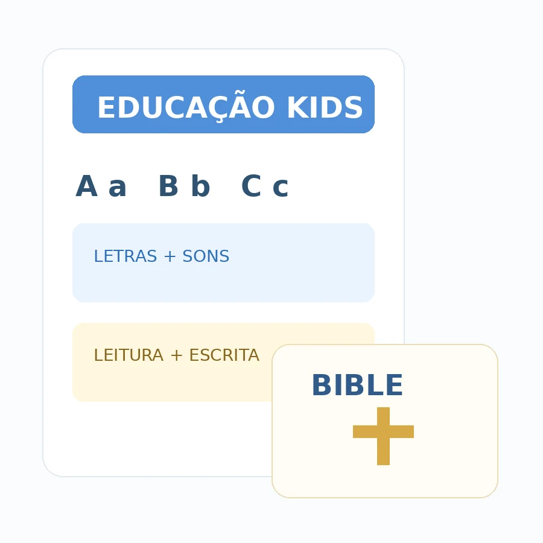
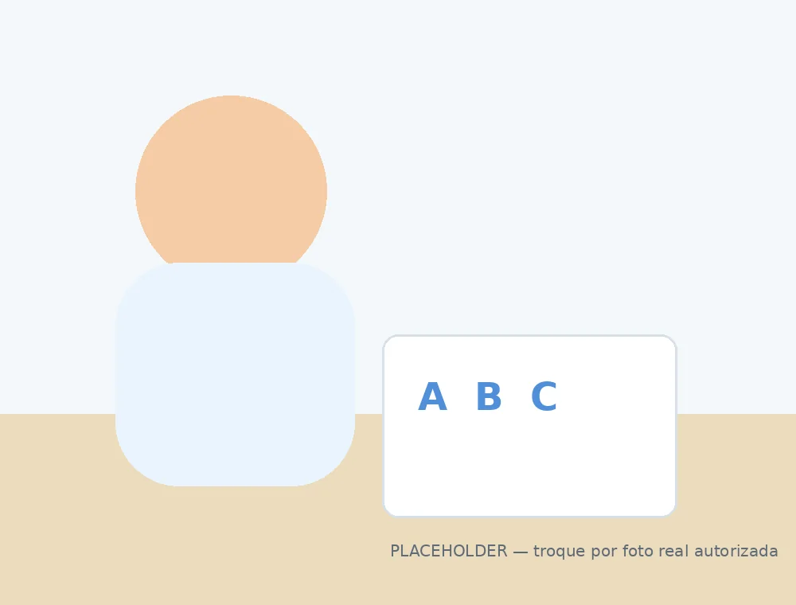
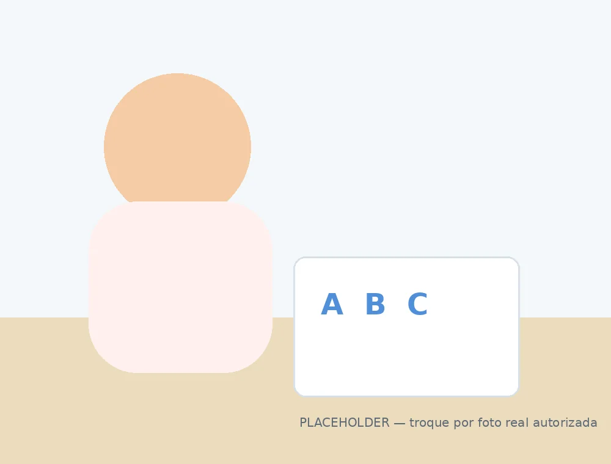
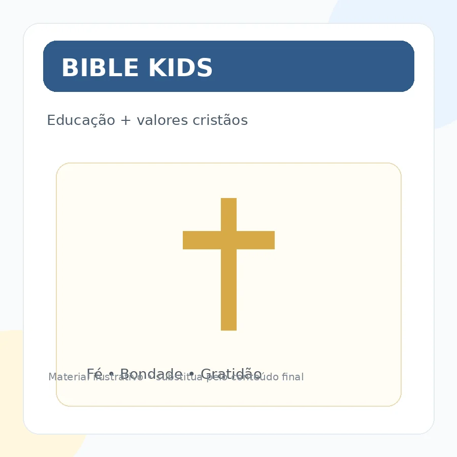

Aa
Mais contato com a leitura
Jogos e atividades ajudam a colocar letras, sons e palavras dentro da rotina de um jeito natural.
Atividades prontas para imprimir que tornam mais simples trabalhar sons, letras, leitura, escrita e valores cristãos de forma leve, divertida e perto de quem a criança mais confia: a família.
Pagamento único • produto digital • acesso após confirmação do pagamento

BIBLE KIDS ✦Pequenos contatos com letras, sons, palavras, histórias e escrita podem fazer parte da rotina antes que o aprendizado vire apenas uma obrigação escolar.
Jogos e atividades ajudam a colocar letras, sons e palavras dentro da rotina de um jeito natural.
Em vez de procurar material novo todos os dias, você escolhe uma atividade, imprime e começa.
A folha deixa de ser apenas uma tarefa e vira um momento de atenção, conversa e presença.
A rotina já é corrida. A mãe quer participar, mas acaba tendo que decidir o que ensinar, procurar material, adaptar a atividade e ainda manter a criança interessada.
O Educação Kids foi pensado justamente para reduzir esse improviso.
Sem método complicado para os pais aprenderem. Sem plataforma confusa. Sem passar horas preparando aula.
Abra o material e escolha a habilidade ou atividade do dia.
Imprima em casa ou na gráfica apenas as páginas que quiser usar.
Não precisa de uma aula longa. Constância vale mais que excesso.
Leia, pergunte, converse e acompanhe a criança durante a atividade.
Brincadeiras sonoras podem apoiar a consciência fonológica e a atenção aos sons da fala.
Relacionar letras e sons cria oportunidades para compreender o princípio alfabético.
Atividades progressivas aproximam a criança da formação e leitura de palavras.
Traçados, letras, palavras e pequenas frases oferecem oportunidades de prática.
Conversar, nomear, contar histórias e responder perguntas estimula o uso da linguagem.
O desenvolvimento varia de criança para criança. Os materiais são recursos educacionais complementares e não substituem escola ou acompanhamento profissional quando necessário.
Substitua os vídeos de demonstração abaixo pelas suas gravações reais. O layout já está preparado para autoplay sem som, loop infinito e reprodução quando o visitante se aproxima da seção.


Os cards abaixo estão prontos para receber depoimentos verdadeiros. Substitua os textos antes de publicar anúncios.
“[INSIRA AQUI UM DEPOIMENTO REAL DE UMA MÃE OU RESPONSÁVEL.]”
[NOME][CIDADE]“[INSIRA AQUI UM DEPOIMENTO REAL DE UMA MÃE OU RESPONSÁVEL.]”
[NOME][CIDADE]“[INSIRA AQUI UM DEPOIMENTO REAL DE UMA MÃE OU RESPONSÁVEL.]”
[NOME][CIDADE]O material foi pensado em blocos fáceis de encontrar, para reduzir procura e aumentar o tempo de prática com a criança.
Alfabetização letras, vogais, consoantes, sílabas e palavras.
Leitura associação, palavras, frases e pequenos textos.
Escrita traçados, letras, palavras e prática de escrita.
Consciência fonológica sons, rimas, sílabas e percepção sonora.
Coordenação motora caminhos, pintura, ligação, recorte e colagem.
Jogos memória, associação, desafios e atividades lúdicas.
Atividades bíblicas para apresentar histórias, personagens e valores cristãos de maneira visual, leve e apropriada para a rotina da criança.
“Educação para a mente. Valores para o coração.”

Clique em qualquer prévia para ampliar. Substitua essas imagens pelos seus materiais definitivos.
Pagamento único. Produto digital. Escolha o pacote que faz sentido para sua família.
Uma seleção essencial para introduzir atividades educativas na rotina.
O acervo ampliado para trabalhar educação, rotina e valores cristãos.
Melhor para quem quer variedade e um material mais completo.
Se a sua plataforma de pagamento oferecer garantia de 7 dias, mantenha esta seção. Caso contrário, ajuste o texto antes de publicar.
Tudo foi organizado para que a compra e o acesso sejam simples.
Após a confirmação do pagamento, você recebe as instruções de acesso digital de acordo com a plataforma de checkout configurada.
Não. Este é um produto digital. Nenhum material físico será enviado pelo correio.
Sim, conforme a licença do produto. Você pode escolher as páginas que deseja utilizar e imprimir para uso permitido.
Não. As atividades foram pensadas para facilitar a aplicação por pais, responsáveis e educadores.
O kit é voltado às fases de pré-alfabetização e alfabetização. A escolha da atividade deve considerar o momento e o desenvolvimento de cada criança.
O Básico traz uma seleção essencial. O Completo amplia o acervo e inclui também o módulo de atividades bíblicas.
A garantia depende da plataforma de pagamento utilizada. Ajuste esta resposta para refletir exatamente a política configurada no checkout.
Escolha o kit, receba o acesso e prepare o primeiro momento de aprendizado.
Produto digital • acesso após confirmação do pagamento